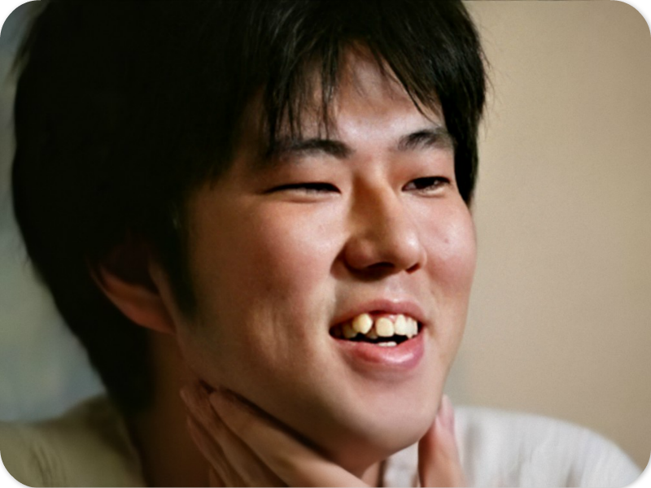
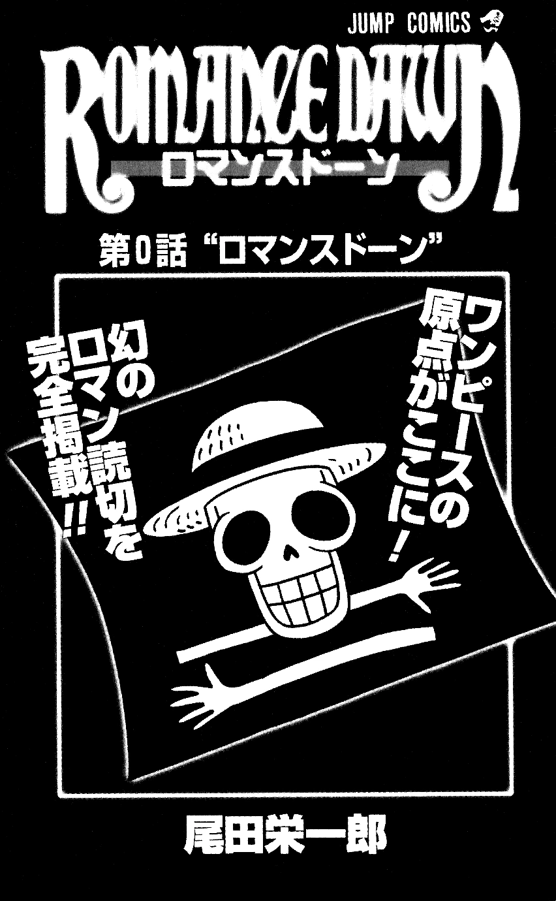
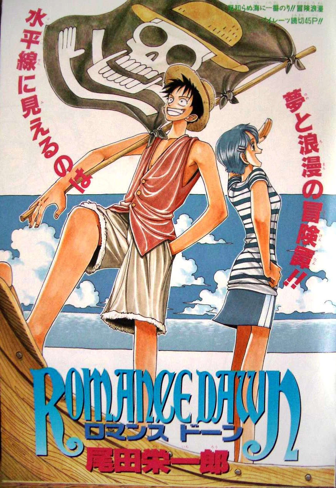

Eiichiro Oda fue inspirado por Akira Toriyama y sus creaciones de Dragon Ball y Dr. Slump a una edad temprana. Como un niño fue inspirado por los vikingos y aspiraba a convertirse en un artista de manga. Más tarde, creó a el personaje Pandaman para Kinnikuman, de Yudetamago. En 1992, a la edad de diecisiete años, presentó su manga llamado Wanted!. Esto sobresalió en él para unirse al personal de la revista Weekly Shonen Jump, donde se convirtió en un asistente de varios escritores del manga como Shinobu Kaitani, Tokuhiro Masaya y, finalmente, Nobuhiro Watsuki.
Oda tenía interés en hacer un manga de piratas, tanto por su obsesión por los vikingos como un joven e inspirado en diversos eventos pirata incluyendo el descubrimiento del barco pirata de Edward Teach (conocido por su nombre de pirata Barbanegra ). Escribió dos one-shots separados en la década de 1990, los cuales fueron llamados "Romance Dawn". Las historias introdujeron a Monkey D. Luffy, un muchacho con un sombrero de paja que deseaba ser un legendario pirata. Varios conceptos de la serialización eventuales aparecieron en estas historias, incluso de la inspiración de Luffy por ser un pirata y un misterioso poder que obtuvo de comer una fruta especial que convirtió su cuerpo en goma (un prototipo para la fruta del diablo).
En agosto de 1997, Oda tomó muchas de sus ideas de "Romance Dawn" y comenzó a escribir una serie semanal bajo el título One Piece. Fue serializada por primera vez en la Weekly Shonen Jump, la revista semanal de Shonen propiedad de Shueisha. La serie se hizo popular a partir de los capítulos iniciales, estableciéndose como una de las series de los mejores manga estrenados.
Originalmente, Oda creía que su serie duraría cinco años (es decir, One Piece podría haber terminado en 2002), pero fue más de lo esperado y no tiene idea de cuántos años más su historia podría seguir publicándose. Sin embargo, cabe señalar que Oda ha dicho que el final del capítulo 597 marca el final de la primera mitad de One Piece. Oda ya ha previsto el final de One Piece y sin importar el tiempo que tarde en completarlo, terminará de la forma en que pensaba desde el principio.

Eiichirō Oda

Akira Toriyama

Romance Dawn V1

Romance Dawn V2